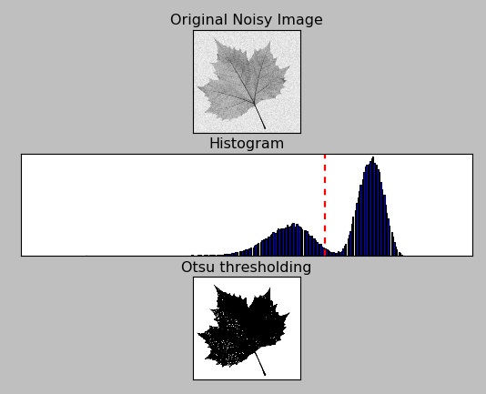

import cv2
import numpy as np
from utils import imshow
Thresholding¶
Thresholding is the binarization of an image. In general, we seek to convert a grayscale image to a binary image, where the pixels are either 0 or 255. A simple thresholding example would be selecting a threshold value p, and then setting all pixel intensities less than p to 0(black), and all pixel values greater than p to 255(white). In this way, we are able to create a binary representation of the image. Normally, we use thresholding to focus on objects or areas of particular interest in an image.
It usually take two steps:
Converting colored image to grayscale.
Applying Thresholding on grayscale image.
Just like smoothing, there are many techniques for thresholding. We will look at a few of them.
Simple thresholding¶
It is the most easiest type of thresholding. Applying simple thresholding methods requires human intervention. We must specify a threshold value T. All pixel intensities below T are set to 0(black in color). And all pixel intensities greater than T are set to 255(white in color).
img = cv2.imread('images/coins2.jpg')
img_gray = cv2.cvtColor(img, cv2.COLOR_BGR2GRAY)
blurred = cv2.GaussianBlur(img_gray, (5, 5), 0)
We took an image, converted it to gray-scale and then applied gaussian blur to it, all usual stuff. We convert to grayscale since cv2.threshold expects a single channel image.
(T, thresh) = cv2.threshold(blurred, 125, 255, cv2.THRESH_BINARY)
cv2.imshow('Original', img)
cv2.imshow('Thresholding', thresh)
cv2.waitKey(0)
cv2.destroyAllWindows()
The cv2.threshold then returns a tuple of two values. The first value, T, is the value that was used for the thresholding in the cv2.threshold function. The second value is our actual thresholded image.
We pass our grayscale image as the first argument, threshold value as the second argument, 255 (white) as our value for when the threshold test passes as our third argument, and finally the threshold method itself as the final parameter.
The thresholding method can be any of the following:
cv2.THRESH_BINARYcv2.THRESH_BINARY_INV: invert the output fromcv2.THRESH_BINARYcv2.THRESH_TRUNC: leaves the pixel intensities as they are if the source pixel is not greater than the supplied threshold.cv2.THRESH_TOZERO: sets the source pixel to zero if the source pixel is not greater than the supplied threshold:cv2.THRESH_TOZERO_INV: invert the output fromcv2.THRESH_TOZERO
As an excercise, try using all these thresholding method on the coin image. This will help you to understand these methods better.
Check out OpenCV documentation to know more type of styles of thresholding.
Adaptive thresholding¶
One of the downsides of using simple thresholding methods is that we need to manually supply our threshold value T. Not only does finding a good value of T require a lot of manual experiments and parameter tunings, it’s not very helpful if the image exhibits a lot of range in pixel intensities. Also, having just one value of T might not suffice.
In order to overcome this problem, we can use adaptive thresholding, which considers small neighbors of pixels and then finds an optimal threshold value T for each neighbor. This method allows us to handle cases where there may be dramatic ranges of pixel intensities and the optimal value of T may change for different parts of the image.
thresh_mean = cv2.adaptiveThreshold(blurred, 255, cv2.ADAPTIVE_THRESH_MEAN_C, cv2.THRESH_BINARY_INV, 11, 4)
thresh_gaussian = cv2.adaptiveThreshold(blurred, 255, cv2.ADAPTIVE_THRESH_GAUSSIAN_C, cv2.THRESH_BINARY_INV, 25, 3)
cv2.imshow('Original', img)
cv2.imshow('Mean Thresholding', thresh_mean)
cv2.imshow('Gaussian Thresholding', thresh_gaussian)
cv2.waitKey(0)
cv2.destroyAllWindows()
we applied adaptive threshold using built-in method cv2.adaptiveThreshold. Here the parameter are as follows:
first : blurred image,
second : upper pixel threshold,
third : adaptive method;
fourth : thresholding style
fifth : size of a pixel neighborhood that is used to calculate a threshold value for the pixel
sixth : C value it is just a constant which is subtracted from the mean or weighted mean calculated.
The third parameter, adaptive method have two possible values cv2.ADAPTIVE_THRESH_MEAN_C where threshold value is the mean of neighbourhood area, and cv2.ADAPTIVE_THRESH_GAUSSIAN_C where threshold value is the weighted sum of neighbourhood values where weights are a gaussian window.
Otsu’s Binarization¶
The last thresholding technique that we are going to discuss is called Otsu’s binarization.
In other thresholding methods we have to decide a value of threshold value either with human intervention (simple thresholding) or using neighbor’s pixel value (adaptive thresholding). So, how can we know a value we selected is good or not? Answer is, trial and error method.
But consider a bimodal image (In simple words, bimodal image is an image whose histogram has two peaks). For that image, we can approximately take a value in the middle of those peaks as threshold value, right? That is what Otsu binarization does. So in simple words, it automatically calculates a threshold value from image histogram for a bimodal image. (For images which are not bimodal, binarization won’t be accurate.)

The red dotted line in the above figure shoes the threshold value.
_, th = cv2.threshold(img_gray, 0, 255, cv2.THRESH_BINARY+cv2.THRESH_OTSU)
_, th_blur = cv2.threshold( blurred, 0, 255, cv2.THRESH_BINARY+cv2.THRESH_OTSU)
cv2.imshow('Original', img)
cv2.imshow('Thresholding w/o blur', th)
cv2.imshow('Thresholding w/ blur', th_blur)
cv2.waitKey(0)
cv2.destroyAllWindows()
we first applied otsu binarization without blur using style cv2.THRESH_OTSU with cv2.THRESH_BINARY and then we applied otsu binarization with blur using the same style.
If you look at the output you will see more clear image using otsu binarization with blur. Hence, its always recommended to smooth the image before applying any kind of thresholding.
We now know, how to apply various thresholding techniques. But when and where to use them? This brings us to the application part of thresholding.
We can use thresholding to create masks and then use this mask to overlay any image on top of the other.
Excercise:
Heres a great blog showcasing some applications of thresholding. The bad new is that the code is written using sk-image library. We don’t know how to use it, but we know the concepts and we also know OpenCV. So, try recreating the examples using OpenCV. This will be a fun exercise.
Edge detection¶
Gradient can be seen by transition from brightness to darkness or vice versa in an image. Dark-to-Light transition is taken as Positive slope (it has a positive value) while Light-to-Dark transition is taken as a Negative slope (it has negative value). Gradient of an image very important factor while performing Edge detection.
All are different gradient functions which use different mathematical operations to produce the required image. For example, Laplacian calculates laplacian derivative whereas sobel is joint gaussian and differenciation operation. Don’t be overwhelmed by the details, just keep in mind that they are just different mathematical functions to analyse an image (you will see soon how).
Sobel Edge Detection¶
Sobel operators is a joint Gausssian smoothing plus differentiation operation, so it is more resistant to noise. In Sobel edge detector we calculate the first order derivative/gradient in X (for horizontal change) and Y(for vertical change) direction separately.
The operation uses two 3X3 kernels which are convolved with the original image to calculate approximations of the derivatives - one for horizontal changes, and one for vertical.
img = cv2.imread('images/sudoku.jpg')
gray = cv2.cvtColor(img, cv2.COLOR_BGR2GRAY)
blur = cv2.GaussianBlur(gray, (7,7), 0)
sobx = cv2.Sobel(blur, cv2.CV_64F, 1, 0, ksize=5) #Sobel X
soby = cv2.Sobel(blur, cv2.CV_64F, 0, 1, ksize=5) # Sobel Y
cv2.imshow('Original', img)
cv2.imshow('Sobel X', sobx)
cv2.imshow('Sobel Y', soby)
cv2.waitKey(0)
cv2.destroyAllWindows()
we are using built-in method cv2.Sobel, in which the first parameter is source image, second parameter is data type of matrix cv2.CV_64F means 64 bytes floating/double values. There are many possible values for data-type parameter. The third parameter is \(d_x\) tells us about the order of the derivative in x direction and fourth is \(d_y\) similar to \(d_x\), tells us the order of the derivative in y direction. The fifth parameter is kernel size.
You can read more about different possible values of data-type parameter, here.
Laplacian Edge Detection¶
laplacian = cv2.Laplacian(blur, cv2.CV_64F)
cv2.imshow('Original', img)
cv2.imshow('Laplacian', laplacian)
cv2.waitKey(0)
cv2.destroyAllWindows()
the built-in method cv2.Laplacian, as always, the first parameter is source image and second parameter is matrix datatype. Unlike Sobel we do not have \(dx\) and \(dy\) because laplacian uses only one kernel.
Canny Edge Detection¶
Canny Edge Detection is similar on Sobel edge detection but a little better than that. Canny works by taking the output image of Sobel edge detection and then reduces the edges to 1 pixel in width.
canny = cv2.Canny(blur, 50, 150)
cv2.imshow('Original', img)
cv2.imshow('Canny Edges', canny)
cv2.waitKey(0)
cv2.destroyAllWindows()
in cv2.Canny function, the second and third parameter are both threshold for the hysteresis procedure. The function finds edges in the input image image and marks them in the output map edges using the Canny algorithm. The smallest value between threshold1 (2nd parameter) and threshold2 (3rd parameter) is used for edge linking. The largest value is used to find initial segments of strong edges.
As you see, both laplacian and canny edge detection algorithm perform really well when compared to simple sobel. The output images are much more readable and interpretable.
Contours¶
Previously, we explored how to detect edges in an image. Now we are going to use these edges to help us find the actual objects in the image and interact with them.
OpenCV provides methods to find “curves” in an image, called contours. A contour is a curve of points, with no gaps in the curve. Contours are extremely useful for such things as shape approximation and analysis.
Just like everything else, opencv also provides a built-in function cv2.findContours for finding contours in an image. The function take a binary image as input. If the image is not binary, then non-zero pixels are treated as 1’s and zero pixels remain 0’s, so the image is treated as binary no matter what you pass.
img = cv2.imread('images/coins2.jpg')
img_gray = cv2.cvtColor(img, cv2.COLOR_BGR2GRAY)
blurred = cv2.GaussianBlur(img_gray, (5, 5), 0)
(T, thresh) = cv2.threshold(blurred, 125, 255, cv2.THRESH_BINARY)
contours, hierarchy = cv2.findContours(thresh, 3, 1)
cv2.findContours takes two additional arguments along side the image. The second parameter is Contour retrieval mode adn the third argument is Contour approximation method. You can find all the RetrievalModes, here and all the ContourApproximationModes, here.
Here, we are using contour retrieval mode as cv2.RETR_EXTERNAL it gives only outermost contour in the image to read more about this flag here and contour approximation method as cv2.CHAIN_APPROX_NONE, all the boundary points are stored. But actually do we need all the points? For eg, we found the contour of a straight line. Do we need all the points on the line to represent that line? No, we need just two end points of that line. This is what cv2.CHAIN_APPROX_SIMPLE does. It removes all redundant points and compresses the contour, thereby saving memory.
The function returns two values: contours and hierarchy. contours is a Python list of all the contours in the image. Each individual contour is a Numpy array of (x,y) coordinates of boundary points of the object.
Lets to draw these contours …
img = cv2.drawContours(img, contours, -1, (0, 255, 0), 2)
imshow('Contours', img)
cv2.drawContours is very similar to cv2.rectangle or cv2.circle. The first argument is the image, the 2nd argument is list of all the contours that we got from cv2.findContours function and the 3rd argument is the index of the contour to draw. If it is negative, all the contours are drawn. The 4th argument is the color and the 5th argument is thickness. Just like every other drawing function.
Drawing contours is not the only thing that you want to do with the contours that you find. OpenCV provides you helper function to do basic things like calculating area and perimeter. Lets see how we can use them.
cnt = contours[0]
area = cv2.contourArea(cnt)
perimeter = cv2.arcLength(cnt,True)
area, perimeter
(124089.0, 1420.0)
The second argument in cv2.arcLength specify whether shape is a closed contour (if passed True), or just a curve.
There are many other things that you can do with contours, you can learn all about them here
At the end of the day, remember, every contour is a numpy array of (x,y) cordinates of boundary points. You can write your own algorithm to do something very specific with them.
Exercise:
We have implemented lane detection, used in self driving cars, using the techniques we learned above. Read the complete notebook and try re-creating the application from scratch.
Kernels¶
You might have noticed that many seemingly different tasks like smoothing, edge detection, etc. use the same idea of kernels (or convolution operations) under the hood. The convolution operation is used in deep learning as well.
This is very surprising so I made a linkedIn post about it and many people reacted to it. One comment mentioned many more computer vision task/techniques that use convolution operations. You can find the post here.
Here are some resources that I recommend you to read to learn more about kernels:
This blog visually explains you what kernels are and how they work. The blog is very interactive and you can see the effect of different kernels in real-time. There are many pre-defined standard kernels and you can also make your own kernel.
This video by Grant Sanderson, takes things further and explains what are kernels through great animations.
Please read the blog and watch the video completely before moving any further.
Questionaire¶
What is thresholding and why is it important?
Name a few thresholding techniques and their applications
Why is edge detection important? What are its application?
What are contours and how do you find them?
Name atleast 5 things that you can do with contours.
Sit tight, in the next notebook, we will introduce you to machine learning.